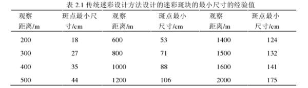

前段时间, 八一建军节, 给一群好朋友讲科普知识, 谈到这个军事问题, 于是就想着写一系列关于数学应用于军事上的博文. 然而拖延症到今天, 终于写下了第一篇<迷彩怎么来的?>也算是开了个头啦!
迷彩的来源
首先, 我们先要了解一下迷彩的诞生. 为什么要有迷彩这个东西.
迷彩, 英文 Military camouflage, 直译就是”军事伪装”. 在现代军事中是不可或缺的战术组成部分.
所以顾名思义, 迷彩是用来伪装的. 最早用在军装上, 用来降低士兵被发现的概率, 从而增加士兵的战场生存能力. 迷彩是最基本的军事伪装技术之一, 也是对抗高技术侦察和武器攻击系统的最常用手段. 其主要目的就是尽量减少目标和周围背景在光学、热红外、雷达波等方面的特征差异, 使侦察仪器难以探测和分辨.
视觉侦察作为基本的侦察方式, 研究对抗视觉侦察的伪装技术是十分重要的. 在军事研究中, 伪装技术研究是一个非常重要的课题, 伪装技术由遮障伪装技术、示假伪装技术和迷彩伪装技术组成. 迷彩伪装技术按照其时间的发展顺序从最初的保护迷彩发展为变形迷彩最后再衍变为最新的数码迷彩.
现在我们国家的武器装备, 军装基本都已经从传统迷彩更换成了数码迷彩. 我们就说说数码迷彩啦.
为什么呢?
在地面作战系统中, 早期的变形迷彩只能适应相对比较简单的背景, 目前为了抵抗更近距离的视觉侦察和高分辨率的仪器成像侦察, 它逐渐被数码迷彩所取代. 数码迷彩是由颜色不同的像素单元按照一定的排布规律排列而成, 更好地结合了计算机像素点阵的呈像原理和人眼的视觉感受特性. 在各种真实的环境的背景下, 由于背景中的树枝、树叶、砂石等物体的不规则边缘轮廓更加破碎和模糊, 它们与数码迷彩的特性相一致, 所以数码迷彩更容易迷惑人的眼睛, 使物体能伪装在环境里.
比如这个:挪威陆军豹2A4坦克在雪地里演习….找找看…

所以啦, 数码迷彩简单的人说就是一堆的色块(像素块), 在满足一定条件下的组合排列生成的.
作为现代军事中是不可或缺的战术组成部分, 每个国家都根据自己的情况, 对迷彩图形的设计进行了大量的研究. 也是巧合, 查到一个不知道真假的”美国国防部防御技术中心”的网站, 查到了5814条开放访问的关于迷彩的设计的探讨的文献….
实际找到下载的论文不多, 因为:

我也没仔细看完所有的论文, 只能大概的略说一下, 我理解的迷彩的设计思路. 欢迎相关专业人士前来纠错.
迷彩设计的三个原则
数码迷彩的图案依照这三个原则设计：
- 多尺度图案：添加高频元素, 以便在近距离观察中隐藏自身.
- 颜色抖动：通过两块颜色混合, 生成新的颜色. (混色原理)
- 边缘效应：修改边缘的视觉效果. (达到模糊边界效果)
迷彩设计思路
(这一段基本抄文献)
迷彩的设计看从那个方面下手了, 设计过程还要结合具体的使用场景. 最早的数码迷彩设计诞生于上个世纪 70 年代, 当时还是集中在理论研究方面, 一些国外的专家学者结合视觉心理学研究迷彩设计和迷彩图案的排布. 日本则设计了一种线条迷彩结合特别的材料, 来避免被红外夜视仪发现. 现在还有很多国外学者的研究主要是将仿生迷彩设计和数码迷彩设计相互结合, 从静止物体的迷彩伪装设计过渡到运动物体的迷彩伪装设计上…..
国内目前迷彩设计的研究主要还是集中从计算机和数字图像处理的角度, 来对数码迷彩设计进行研究, 主要集中在迷彩单元颜色的生成、迷彩单元的排列和迷彩伪装效果的评价等方面.
*数码迷彩生成的步骤有：1.对伪装背景图像进行预处理；2.提取伪装背景的主色；3.设计迷彩单元的大小和排布方式；4.生成数码迷彩图案. *

在设计数码迷彩的过程当中, 主要是对数码迷彩单元进行设计. 数码迷彩单元设计包括数码迷彩单元颜色、迷彩单元排布方式、迷彩单元尺寸大小和迷彩单元形状等等要素. 总结一下, 迷彩单元颜色是按照伪装物体所在背景的主色来生成；迷彩单元排布方式有的是根据背景颜色的分布来进行设计, 有的则是采用一些例如随机排布数学方法来设计；迷彩单元的大小是基于人眼最小分辨率和颜色混合原理来进行设计；迷彩的形状是根据其边缘轮廓与所在的背景能够相互融合的要求来设计.
所以说了嘛, 迷彩的设计要根据具体的使用场景, 所以我们有海洋迷彩, 荒漠迷彩, 丛林迷彩各种…也就是生成数码迷彩的前两步1.对伪装背景图像进行预处理；2.提取伪装背景的主色. 也就是说, 提取具体使用场景, 选取具有典型季节, 地理特征的代表性的背景图案, 进行颜色空间转换后(转换成符合人眼视觉感知特性的颜色空间.), 然后提取主色作为基本颜色绘制数码迷彩.
1. 主色和斑块信息的提取:
根据文献, 提取背景主色常用 K-均值聚类算法. 还有一些其他的, 诸如模糊C均值聚类算法等等. 使用 K-均值聚类算法的时候很重要的点在于选择初始聚心, 这里在文献中也有不同的方法, 比如谱系聚类法…(如果看不懂这些名词欢迎自行必应一下.), 提取主色之外, 还有背景图像初始聚类分布图（单像素颜色分布图, 也就是斑块信息）.
提一句, 迷彩一般所使用的颜色最多不超过5中, 我国的数码迷彩一般使用四种{?}颜色. 称为军标优势色, 所以提取主色后, 还要用与背景主色最接近的军标优势色来替换.
在提取出背景的主色和背景图像的初始聚类分布图后, 我们要确定自己的伪装要达到的目标, 也就是确定侦测距离和被伪装物体的外形大小. 这个原因在于, 人眼看或者照相机拍摄, 像素块越大, 要被看不清的距离也就越远. 这就是一个成像的问题啦. 外形越大, 像素方块也应该相应的变大, 足够模糊物体边界就可以了.
就像这样:(军装上的迷彩方块小小的, 后面(应该是自行榴弹炮?)迷彩方块就大了, 再后面的导弹发射车用的就是传统的变形迷彩了….)
2. 数码迷彩单元的尺寸是这样确定的:
在侦测距离一定的情况下, 由人眼所能分辨的最小距离作为衡量指标, 数码迷彩单元的尺寸 $\leq$ 人眼所能分辨的 最小距离, 只有这样, 观察者在这个相对于之前的侦测距离更近的侦测距离观察数码迷彩时, 数码迷彩才能产生混色效果.
具体数学计算略过, 在特定的侦测距离为 $D$ 的情况下, 人眼所能分辨的最小距离:
$$d=D\times\frac{\pi}{180}\times\frac{1}{60}\approx2.9\times 10^{-4}\times D$$
这里找到一张根据传统迷彩设计方法得到的最小尺寸经验值表:

3. 绘制迷彩图形
有了上面的准备, 现在可以开始画迷彩了!
接下来需要对背景图像初始聚类分布图进行再聚类：我们已经确定了迷彩单元的大小了, 那么就可以开始计算了, 对于一个数码迷彩单元, 里面包括了好几种颜色的像素, 并对这些像素值求平均, 用和这个平均值颜色最接近的主色(已经替换为相应的军标优势色)去填充这一个数码单元(不是这个平均颜色哦). 就这样, 所有的数码单元组合在一起, 生成最终的数码迷彩图像, 最后按照物体的形状对这个要伪装的物体”量体裁衣””, 生成最终可以用于涂装的数码迷彩.
这个过程, 其实就像 photoshop 里面我们给照片打马赛克类似.
当然, 我们不会满足于此啊, 根据文献, 现在的迷彩设计中, 为了让仅有的几种色彩能更好的在伪装时模拟背景环境中的光影视觉效果, 就利用了所谓混色原理, 对数码单元进行切割.什么是混色原理呢? 简单说就是近看是不同颜色色块, 远看, 视觉上,因为分辨不出, 于是就产生了颜色的混合叠加, 看起来就像产生了新的颜色.
当然不是所有的迷彩这样做都ok, 一个例子就是荒漠迷彩. 在沙漠, 雪地, 这类, 颜色大多比较单调的背景环境中, 迷彩单元的填充往往使用的是随机填充.
这就是初步绘制的迷彩图形了, 接下来就需要对这个图像的伪装效果进行评价了.
4. 评估伪装性能
其实评估伪装性能, 意思很简单啊, 在一定距离上我是不是能够看得出这个东西的轮廓呢?所以一般使用的是各种改进发展的边缘检测算法, 要是轮廓清晰, 显然伪装性能很糟嘛~
评估了以后, 不行就再修改, 再评估, 直到得到满意的程度为止.
5.最后一点总结
上面所述, 也仅仅是针对计算机进行迷彩设计而谈论, 真实的迷彩设计也是这个基本原理, 但是由于现代战争中侦测手段越来越多, 所以,迷彩的设计, 现在不仅仅是设计图形, 比如日本那种条形数码迷彩军装, 就是考虑军装材质与图形结合后, 红外夜视仪条件下不容易被观测.
另外, 数码迷彩单元形状其实也不仅限于正方形, 其实还有三角形, 平行四边形, 六边形等等, 所以有些国家的迷彩看着不一样, 各个国家有自己设计的考虑.
一个迷彩设计中也有大学问哦!